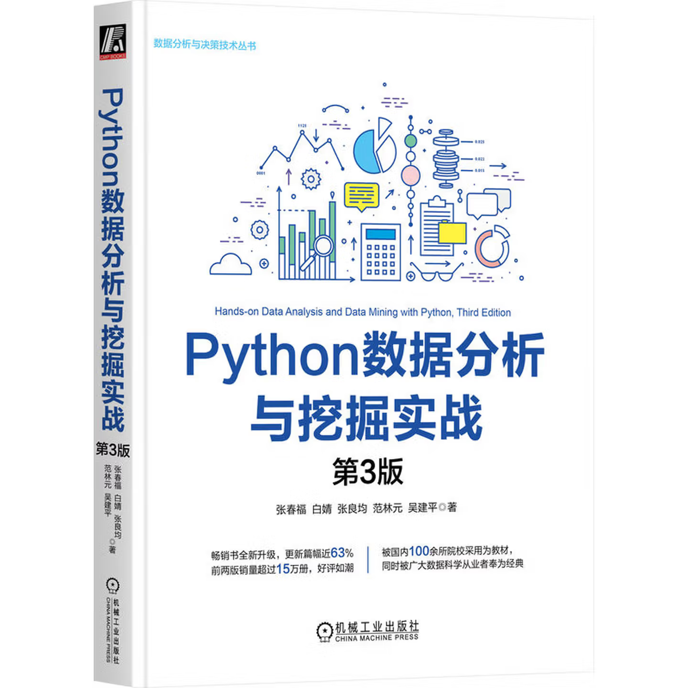
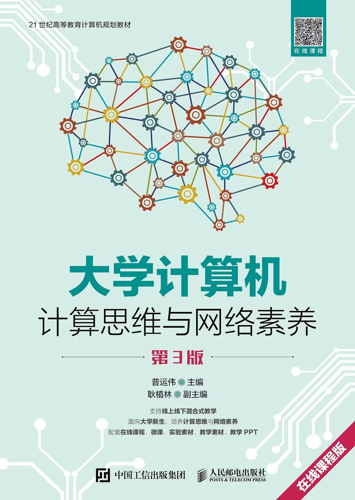
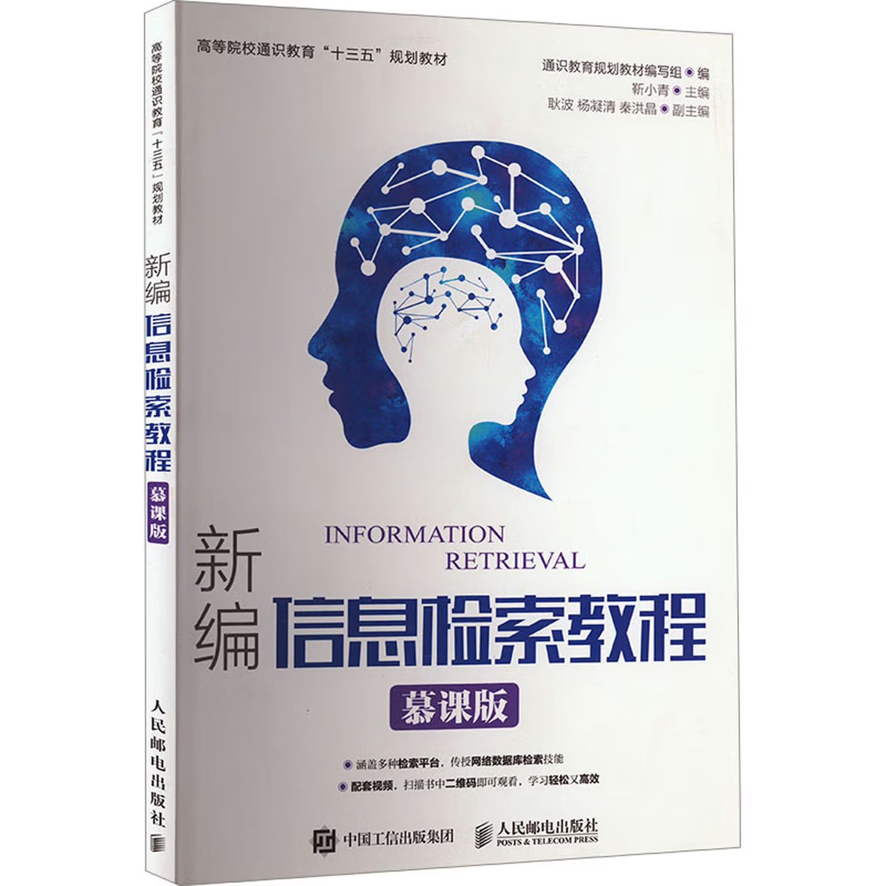

Teaching

计算思维与信息基础

计算机专业英语

I am currently an Associate Researcher at the College of Intelligence and Computing, Tianjin
University.
I received my Ph.D. degree in Computer Applications Technology from Tianjin University in 2020.
I was a Postdoctoral Fellow at the Tianjin University–China Mobile Communications (Tianjin)
Joint Laboratory in 2022,
and also a Postdoctoral Fellow at the School of Nursing, The Hong Kong Polytechnic University
(PolyU), from 2022 to 2024.
I was selected as an Outstanding Youth Academic Talent in 2020.
In recognition of my academic influence, I was listed among the world's top 2% of scientists by
Stanford University.
I was also honored with the Best Paper Nomination Award at PRCV 2025.
Over the past five years, I have published more than 50 papers,
including CCF-ranking A/B conference papers (e.g., NeurIPS, AAAI, IJCAI, WWW, EMNLP, CIKM,
NAACL)
and top journal papers (e.g., IEEE TFS, IEEE TAI, IEEE TAC, IEEE TITS, IEEE TCE, ACM TOIS, ACM
TOIT, ACM TOMM,
ACM CSUR, INFFUS, TCS, NN, AI, ACM TALLIP).
张亚洲，豫北人也，生于斯，长于斯。北游冰津，中客郑城，复浮南海，历粤城而归。貌不逾中，性介而傲，好慢游，喜嚣论，不可以事贾生。少时沉酣剑侠，耽嗜幻想，常怀顾盼之情，感白头之慨。三十载奔趋四方，尺寸靡就。岁晏气索，平旦自讼，乃知平生所慕，非慕姜尚之韬，非希李玄之仙，但愿得闲曹一席，公事了却，携三五旧雨，浅斟微醺，仰睇浮云，俯察尘事；左顾稚子，右挈山妻，以此为至乐。他年委化，当瘗一坏之土，立片石而题曰：“为情而迷，以梦为生。”若魂兮有知，与无知焉，吾皆无憾矣。
2019/08-now, 齐鲁工业大学（山东省科学院）, 计算学部，山东省计算中心（国家超级计算济南中心）, 副研究员.
2014/09-2019/06, 天津大学, 智算学部, 博士
Large Language Model(大模型), Sentiment Analysis(情感分析), Quantum Cognition(量子认知), Sarcasm Detection(讽刺检测), Affective Reasoning(情感推理), Natural Language Processing(自然语言处理)

[TJU] 宋长皓，2024级，博士研究生，研究方向：情感推理模型（协助张鹏老师指导）。

[TJU] 郁军号，2025级，研究生，研究方向：多模态大模型构建。

[TJU] 李昊坤，2025级，研究生，研究方向：大模型的认知能力评测（协助张鹏老师指导）。

[TJU] 张佩怡，2024级，研究生，研究方向：大模型的教育价值对齐（协助王博老师指导）。

[PolyU] 姚奔，2025级，博士生，研究方向：护理价值对齐与医疗世界模型（协助指导）。

[ZZULI] 俞洋，2020级，已毕业；去向：兰州大学读博。研究方向：多模态对话情感分析。

[ZZULI] 和玉，2021级，已毕业；去向：郑州银行软件开发部。研究方向：讽刺、欲望识别。

[ZZULI] 王梦遥，2022级，已毕业；去向：重庆大学读博。研究方向：多模态讽刺检测。

[ZZULI] 刘祈蒙，2023级。研究方向：情感大语言模型、思维链。

[ZZULI] 邹春旺，2023级。研究方向：讽刺理解大语言模型。

[BIT] 刘耀琛，2020级，已毕业。研究方向：多模态情感分析、量子认知。

[BIT] 马放，2020级，已毕业。研究方向：对话情感分析、偏见检测。

[BIT] 贾奥，2022级，已毕业，中央办公厅。研究方向：多模态欲望识别、多任务学习。
yzhou_zhang@tju.edu.cn
Tianjin University, Tianjin, China
(+86)18222832966